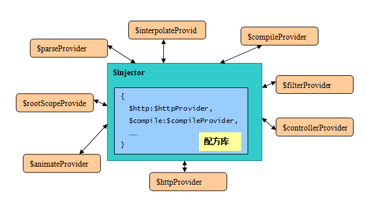

注入器/injector
注入器是AngularJS框架实现和应用开发的关键，这是一个DI/IoC容器的实现。
AngularJS将功能分成了不同类型的组件分别实现，这些组件有一个统称 - 供给者/provider，
下图中列出了AngularJS几个常用的内置服务：
示例： 
注入器的引用：AngularJS的组件之间不可以互相直接调用
一个组件必须通过注入器才 可以调用另一个组件。
注入器的好处：组件之间相互解耦，对象的整个生命周期的管理 甩给了注入器。
注入器的功能：1.集中存储所有provider的配方
注意：配方其实就是：名称+类构造函数。
执行流程：AngularJS启动时，这些provider首先使用其配方在注入器 内注册。
比如，http请求服务组件封装在$httpProvider类内，它通过"$http"这个名字在注入 器内注册。
2.按需提供功能组件的实例
其他组件，比如一个用户的控制器，如果需要使用http功能，
使用"$http"这个名字 向注入器请求，就可以获得一个http服务实例了。